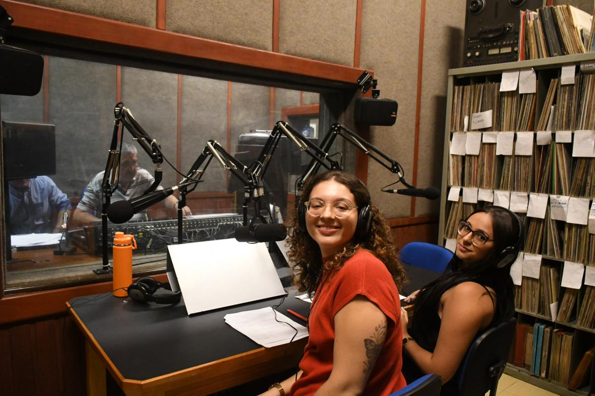

Pontifícia Universidade Católica do Paraná
PUCPR

Estudantes da PUC-PR produzem notícias para a rádio CBN
Estudantes de Jornalismo da PUC-SP podem praticar o aprendizado em sala de aula de diversas formas ao longo do curso...
12 de Maio de 2026